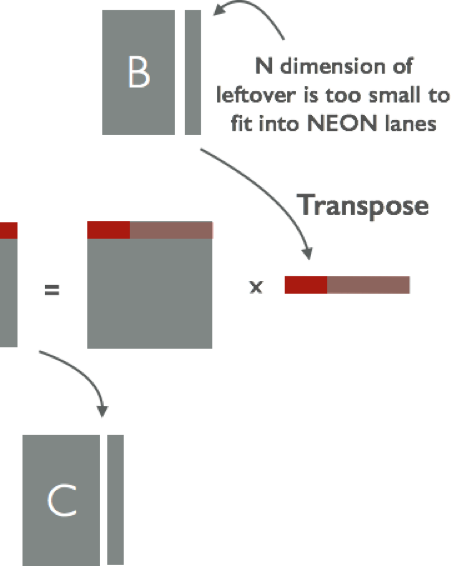
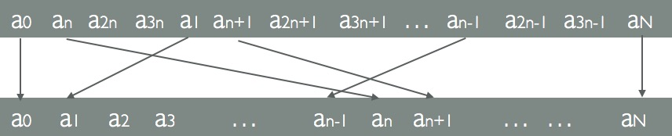
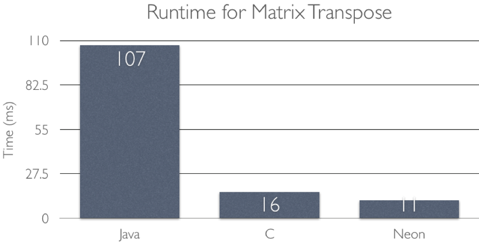
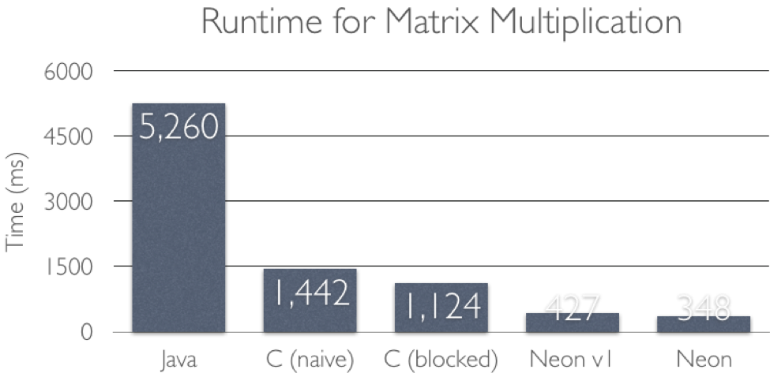
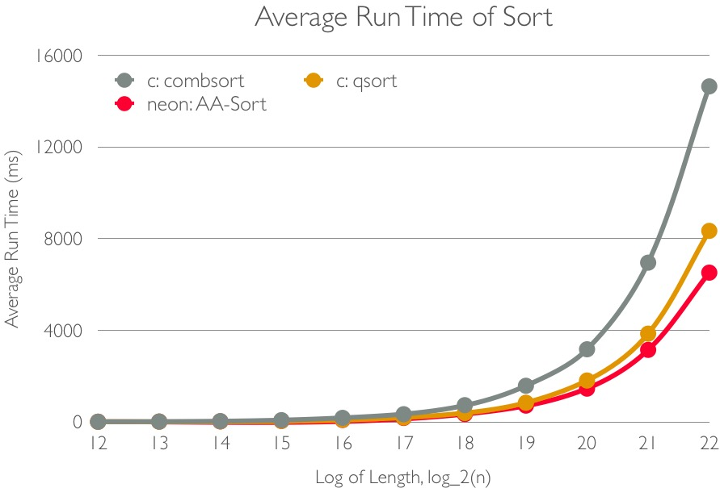
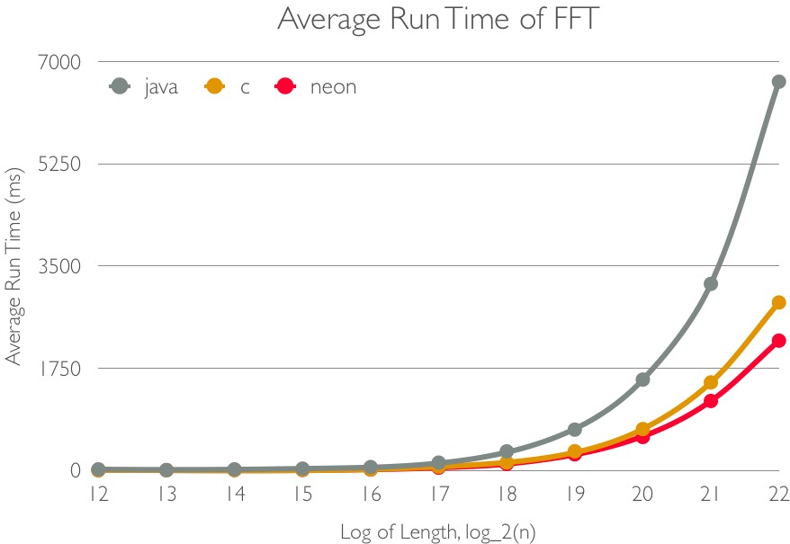

Writeup
Summary
We create two neon-based libraries for android developers.
Matrix Library called FaMatrix. The library contains most useful matrix operations, including matrix transpose, addition, and multiplication. The library support short, int and float data types.
Basic Tools Library called FaCollection. This is a basic library and provide three basic tools, including vectorized calculation, sort and fast fourier transform. The library support int and float data types.
Based on our our library, we develop a android graphic application to showcase our works. The first application we developed is a rotating points. Here we randomly generate some points in 3D space and then show their projection on X-Y Flat in the screen. Then we use FaMatrix to calculate the next location of these points and then draw their projections again. Finally, we can show a dynamic processing of rotating points.
 Pic 1.1 Rotating Point Application
Pic 1.1 Rotating Point Application
Background
In this part, we will talk about the both of the environment of our platform and our basic (serial) algorithms.
For the environment, we choose Android smartphones (Nexus 4 & Samsung i9300) for our experience. We make use of NDK toolset to implement our code in native-code languages C. We setup our environment with Android Studio and develop our application based on sample code provided by google (https://github.com/googlesamples/android-ndk). Finally, we pack our code using Android Studio, too.
Then we will introduce our basic algorithms.
One algorithm we implemented is sorting algorithm. In our implementation, sorting is an process of arranging data (in an array) in ascending order. The input of sorting algorithm is an array and its output is an array sorted in place. The most common sorting algorithm is quicksort, which can make use of multiple core but not SIMD instructions. Lucky there are some good algorithm for SIMD implementation based on combsort.
Another algorithm we implemented is Fast Fourier Transform (FFT). This is an classic algorithm which is important in signal processing, image processing, multiplication of polynomials and so on. It can be implemented through hardware sometime, but the software implementation is still very important. An good example is FFTW, a known as the fastest free software implementation of the FFT. Here we refer to the code in Introduction to Algorithm. Its basic data flow is hard for SIMD, so we try to change it to another form, which will be talked in section “approach”.
We also implement matrix operations, improving both in cache performance and calculation speed. We will introduce them latter.
Contribution
In FaMatrix library, the matrix multiplication achieves 14.6x speedup to Java version, 4.1x to C version multiplication. The transpose can achieve 8.9x to Java version, and 1.5x to C version.
In FaCollection, the calculation of points variables can run as fast as 2.2x than serial code in C, the sorting algorithm can run 5x - 7x faster than official java code and 1.7x faster than comsort code in c, and 1.1x - 1.3x faster than quicksort code in C, FFT can run 3x - 5x faster than Java implementation and 1.2x - 1.5x faster than same implementation on C code.
Besides of the speedup of several useful algorithms, we also re-organize the data flow of FFT and make it better for data locality and can be use for SIMD easily. As far as we know, we do not have an implementation like it so far.
Approach
We implementation our algorithm based on c language and NEON instructions.
Matrix Transpose
Neon lanes can be used to improve the cache performance of matrix transpose operation. For naive version matrix operation, we can simply use result[j][i] = matrix[i][j] to achieve our goal. But since we take big steps when storing result, the cache will alway miss. To improve the cache hit rate, we use the following algorithm to calculate matrix transpose operation using Neon.
For 4x4 matrix we first load each row to each lanes, then interleave the first lane and third lane, finally interleave the first lane and third lane again, as shown in the following image.

Pic 3.1 4x4 Matrix Transpose
For 8x8 matrix transpose, we can use the same mechanism: Load one row into two lanes, say lane_high, lane_low. Then interleave each lane.
lane_high 0 interleaves with lane_high 4
lane_high 1 interleaves with lane_high 5
lane_high 2 interleaves with lane_high 6
lane_high 3 interleaves with lane_high 7
lane_low 0 interleaves with lane_low 4
lane_low 1 interleaves with lane_low 5
lane_low 2 interleaves with lane_low 6
lane_low 3 interleaves with lane_low 7
 Pic 3.2 8x8 Matrix Transpose
Pic 3.2 8x8 Matrix Transpose
After three interleaving operation, we can the get the result.
For matrix with larger size, we split it into multiple 8x8 matrix, then use previous algorithm to calculate them. Notice that if height and width of matrix is the multiple of 8, there must be leftover elements. Leftover elements can be handled using overlapping. This involves processing some of the elements in the array twice. Twice processing will not change the value of transpose.
 Pic 3.3 Deal with Overlapping in Matrix Transpose
Pic 3.3 Deal with Overlapping in Matrix Transpose
To do the interleaving operation, we use VZIP instruction. VZIP interleaves the 8, 16 or 32-bit elements of a pair of vectors. The operation is the same as that performed by VST2 before storing, so use VST2 rather than VZIP if you need to zip data immediately before writing back to memory.
 Pic 3.4 Interleaving Two Lanes using VZIP
Pic 3.4 Interleaving Two Lanes using VZIP
Matrix Multiplication
Matrix multiplication is widely used in many applications. So we decided to make improvements on that. As we all know, the naive matrix multiplication is like this:
for (int i = 0; i < M; i++)
for (int j = 0; j < N; j++)
for (int k = 0; k < K; k++)
C[i][j] += A[i][k] * B[k][i];
The implementation is cache unfriendly. Spatial locality in A matrix is good, but in B, the spatial locality is bad since the program access different row in B in every iteration, which need to load a new row into cache. The temporal locality in A matrix is also a problem. We need to reread the same values of A multiple times to compute different elements of C, and A's row could have been evicted from cache by the time we want to reread it by one of B's rows.
 Pic 3.5 Blocked Matrix Multiplication
Pic 3.5 Blocked Matrix Multiplication
To improve this, we split each matrix into blocks, so that we can compute partial result for block C while required blocks of A and B remain in cache.
 Pic 3.6 Parallel within Block
Pic 3.6 Parallel within Block
Within the block, we use SIMD to parallelize the operation, as shown in pic. 3.6. The expected speedup is 4 time faster than blocked C version multiplication.
for (iblock = 0; iblock < m_a; iblock += BLOCK_M)
for (jblock = 0; jblock < n_b; jblock += BLOCK_N)
for (kblock = 0; kblock < n_a; kblock += BLOCK_K) {
for (i = 0; i < BLOCK_M; i++) {
for (j = 0; j < BLOCK_N/LANES_INT_NUM; j++) {
float32x4_t sum_vect = vdupq_n_f32(0);
for (k = 0; k < BLOCK_K; k++) {
float32x4_t a_vec = vdupq_n_f32(a[(i + iblock) * n_a + (k + kblock)]);
float32x4_t b_vec = vld1q_f32(b + (k + kblock) * n_b + (j * LANES_INT_NUM + jblock));
sum_vect = vmlaq_f32(sum_vect, a_vec, b_vec);
}
float32x4_t oldresult = vld1q_f32(result + (i + iblock) * n_b + (j * LANES_INT_NUM + jblock));
vst1q_f32(result + (i + iblock) * n_b + (j * LANES_INT_NUM + jblock), vaddq_f32(oldresult, sum_vect));
}
}
We could carefully deal with the leftover to approach the expected speedup. The main goal is to fully utilize the neon lanes.
 Pic 3.7 Leftover in N
Pic 3.7 Leftover in N
In pic. 3.7, there are leftover in N range. Therefore within the block, there must be some elements that cannot fit into the lanes. So we still parallelize in the block until the elements cannot fit into the lanes.
 Pic 3.8 Leftover in M
Pic 3.8 Leftover in M
In pic. 3.8, there are leftover in M range. In this situation, all elements still can fit into the SIMD lanes, since data in same row will be put into SIMD lanes, while the rows don’t have leftover.
 Pic 3.9 Leftover in M and N
Pic 3.9 Leftover in M and N
In pic. 3.9, there are leftover in both M and N range. In this case, we choose to implement the leftover using sequential way.
For the Pic 3.7 Leftover in N, although some of the leftover can fit into the SIMD, there are still parts of data cannot fit into SIMD, since the N dimension of leftover is too small. For example, if N dimension of block is 32, and dimension of leftover matrix is 5, then the last 1 column of data cannot fit into NEON lanes. To solve that, we came up a solution as shown below. We firstly calculate the element that cannot can fit into lanes. Then, for the remaining part, we transpose that part, so that it can fit into the SIMD lanes, as shown in Pic 3.10.

Pic 3.10 Deal with Leftover that cannot fit into NEON lane
Point-Value Representation of A Function
This is a basic implementation we did with neon. Point-value representation is a processing of calculate the y given x and a function f, that is, y = f(x). If we have multiple value of x and the same function f, it can be simply speedup with NEON.
The basic processing of using neon to calculate the point value is like Pic 3.10.
 Pic 3.11 Data Flow of Calculating Point-Value Representation
Pic 3.11 Data Flow of Calculating Point-Value Representation
For the leftover points, if the total length of vector is not multiple of 4, we can simple use overlap to calculate the them twice. Both of them are loaded with the initialized value. See Pic 3.11 for explanation.
 Pic 3.12 Deal with Leftover on Calculating Point-Value Representation
Pic 3.12 Deal with Leftover on Calculating Point-Value Representation
So we will do only one more time of calculation with left points. If we have N points, the total load and store we use is (N + 3) >> 2. The theoretical ideal speedup of using NEON is 4x, assuming the executing time of NEON is as same as C code and the length of vector is four.
Align Access Sort
Align Access Sort (AA-Sort) is parallel sorting algorithm for multi-core SIMD processors. In this paper, the author want to use SIMD to reduce the number of conditional branches in their programs. To make it, the author come up with an in-core algorithm and an out-core algorithm. However, the out-core algorithm needs a vector permutation operation, which is not supported by NEON, so we decided to replace it with merge sort.
The overall implementation of AA-sort is similar to use merge sort to divide blocks and use incore sort to sorting the blocks. First of all, we should divide all of the data into blocks that fit into the cache of the processor, we check each blocks and then divided to two smaller blocks if it bigger than size of cache. This reasonable blocking can help making advantage of locality.
Then we use AA in-core sort to sort each block, this is the main part of our algorithm and can be run under multiple processors. Finally, we use merge sort to sort the neighbored blocks.
In sorting each block, we making use of openMP to speedup since the smartphone have four cores. But the speedup is a little. To find the reason, we think that is because each algorithm are using the vector operation, but we only have limited vector operators.
In the left words of this subpart, we mainly talking about the in-core algorithm and its implementation.
The in-core algorithm of AA-sort improves based on combsort, an extension to bubble sort. Pic 3.13 show the basic processes of combsort algorithm. It compare the values with gaps and then shrink the gap. Finally, it use bubble sort to sort the vector until the array is sorted. The basic data flow is shown in Pic 3.13. The time complexity of this algorithm is O(N logN).
 Pic 3.13 Data Flow of Combsort
Pic 3.13 Data Flow of Combsort
As for the in-core algorithm, we group four numbers (assuming the length of vector is four) together and then compare the vector after a gap. What’s more, we should compare the last vectors with the initial vectors with the skew of points. The pseudo code of this algorithm is
gap = (N/4) / SHRINK_FACTOR;
while (gap > 1) {
/* straight comparisons */
for (i = 0; i < N/4 - gap; i++)
vector_cmpswap(va[i], va[i+gap]);
/* skewed comparisons */
/* when i+gap exceeds N/4 */
for (i = N/4 - gap; i < N/4; i++)
vector_cmpswap_skew(va[i], va[i+gap - N/4]);
/* dividing gap by the shrink factor */
gap /= SHRINK_FACTOR;
}
do {
for (i = 0; i < N/4 - 1; i++)
vector_cmpswap(va[i], va[i+1]);
vector_cmpswap_skew(va[N/4-1], va[0]);
} while( not totally sorted );
In this code, the author come up with two operation, that is vector_cmpswap(A, B) and vector_cmpswap_skew(A, B). The vector_cmpswap(A, B) is an operation that compares and swaps values in each element of the vector register A with the corresponding element of the vector register B. vector_cmpswap_skew(A, B) is an operation that compares and swaps the first to third elements of the vector register A with the second to fourth elements of the vector register B.
Our implementation of vector_cmpswap(A, B) and vector_cmpswap_skew(A, B) is
void vertor_cmpswap(int32x4_t *a, int32x4_t *b)
{
int32x4_t t = vminq_s32(*a, *b);
*b = vmaxq_s32(*a, *b);
*a = t;
}
void vertor_cmpswap_skew(int32x4_t *a, int32x4_t *b, int32x4_t *tmp)
{ // tmp here is vector of INT_MAX
int32x4_t tmp_t = vextq_s32(*tmp, *b, 1);
int32x4_t tmp_b = vextq_s32(*b, *tmp, 1);
vertor_cmpswap(a, &tmp_b);
*b = vextq_s32(tmp_t, tmp_b, 3);
}
It very important to choose the right SHRINK_FACTOR here, because a bigger SHRINK_FACTOR will lead to a faster shrink and leave too much at the bubble sort part. A too small shrink leads to a slow speed at first part. So we test some values and choose to set the SHRINK_FACTOR as 1.3, just as the paper’s choice.
As for detecting whether totally sorted or not, we should check whether the list before change and after change is same. This operation is an important operation but needs lots of time because we implemented it serially. Even the official instruction is serial code so we did not find the good solution yet.
To deal with the leftover, we set some vectors with only 3 useful values at the end of this array, and the 4th length as the MAX value of this type. Take length = 10 as an example, the leftover is processed as Pic 3.14.
 Pic 3.14 Deal with Overleft on AA Sort
Pic 3.14 Deal with Overleft on AA Sort
After sort, the order of values is not ordered but needs us to put them into the right place. So we should put them back to right place. The final order and the way we to put them back is shown in Pic 3.15.

Pic 3.15 The final step of AA Sort
The out-core algorithm is make use of odd-even algorithm. Instead, we use merge sort to merge two sorted blocks. The time complexity is still O(N log N).
One important factor here is to set the right blocksize to fit the cache line. We will assign enough space for all the vectors so it will works better if the cache / register size can fit them in. Here we call it CACHE_LINE, and set it to 256 after the testing.
In our implementation, we cut down the comparison but remain some serial code, and we have quicksort as another baseline, so the speedup is difficult to estimate.
Fast Fourier Transform
A fast Fourier transform (FFT) algorithm computes the discrete Fourier transform (DFT) of a sequence, or its inverse. It manages to reduce the complexity of computing the DFT from O(n^2), which arises if one simply applies the definition of DFT, to O(N log N), where N is the data size. In this algorithm, N much equals to 2^x.
The basic implementation is learnt from Introduction of Algorithm Chapter 30. Although some devices have special circuit to calculate it, the fast implementation of FFT is still very important in some area (signal processing, image processing, multiplication of polynomials). The basic data flow is shown in Pic 3.16.
 Pic 3.16 Data Flow of FFT
Pic 3.16 Data Flow of FFT
Each line in this Pic is an adder and each W here is a multiplier before the adder. According to the Introduction of Algorithm, the pseudo code of FFT is
A = REVERSE_BIT(A)
m = 2
while (m <= length) {
w_m = e^i(-M_PI * 2 / m);
{
for (k = 0; k < len; k += m) {
comp_float w;
w = 1.0;
for (j = 0; j < m/2; j++) {
t = w * A[k+j+m/2]
u = A[k+j]
A[k+j] = u + t
A[k+j+m/2] = u - t
w = w * w_m
}
}
}
m = m << 1
}
The REVERSE_BIT here is to calculate the reversed bit of each location and swap the value of them. This implementation is the directly representation of data flow of FFT. However, this implementation is extremely unfriendly for SIMD operation because we do not have any operation on continuous set of data.
As a result, we change it to another form. Its basic data flow is shown in Figure 3.17.
 Pic 3.17 New Data Flow of FFT
Pic 3.17 New Data Flow of FFT
m = 2
h = length >> 1
while (m <= length) {
w_m = e^i(-M_PI * 2 / m)
w = 1.0
for (b = 0; b < m/2; b++) {
bit = get_reverse(b, len)
for (k = 0; k < h; k++) {
u = A[bit + k]
t = w * A[bit + h + k]
A[bit + k] = u + t
A[bit + h + k] = u - t
}
w = w * w_m
}
m = m << 1
h = h >> 1
}
A = REVERSE_BIT(A)
}
Our implementation should work better than serial code because the implementation of SIMD.
Here we finished all the functions in FaCollection.
Result
For the matrix operation part, we test the runtime of matrix multiplication and transpose. Pic xxx shows the run time for matrix transpose tested with 1000*1000 matrix. The neon version transpose is 8.9x to Java version, 1.5x to C version. One might ask why the speedup is not 4. The expected speedup to C is not 4x, since in this situation there is only data movement, neon lanes are used for improve the cache performance, not used for multi-calculation.

Pic 4.1 The Performance of Matrix Transpose
Another part of the test is matrix multiplication. Pic xxx shows the run time for matrix multiplication tested with 500*500 matrix. The neon version multiplication is 14.6x to Java version, 4.1x to C naive version, 3.1x to C blocked version, 1.2x to neon v1. The C naive version is the C version implementation without cache performance improvement. The C blocked version is C version, using block to improve cache performance. The neon version is based on the blocked C version. Neon V1 version is the neon version without improving the leftover element. Neon version is the neon version that improve the leftover performance as shown in previous.
The expected speedup of multiplication is 8x, but we only achieve 3.1x speedup to C blocked version in samsung i9300. One reason is that there are still some sequential part in leftover element. Another reason is the memory bound. Memory is the bottleneck the the performance.
We also find that method for dealing leftover in Pic 3.10 cannot make good improvement. The run time for this method is quite similar to C version. We find the slow part is the result data gathering from one lane (The final result is the sum of four data in one lane). Neon does not have specific function to deal with gathering data from one lane, so we implement that by ourselves, which is the bottleneck of this method.

Pic 4.2 The Performance of Matrix Multiplication
For FaCollection library, we test three tools separately.
At first, we test the vector operation using Samsung i9300. We can get about 2.2x speedup than same code in serial c version. The speedup stay stable with the num_var (the number of parameters) and the len_vec (length of vector). In this implementation, we only load each elements once (except the overlap with leftover), so the speedup (compared to C code) of this implementation should be the baseline of our other implementation for other algorithms with same algorithm.
We test AA sort in Nexus 4. We compared it with the combine sort in C and official qsort in C. We got the average run time of different algorithm is shown in Pic 4.3. It can run 2.2x faster than serial version of combsort in c and 1.2x faster than quicksort. To make the figure more clear, I do not put the test of java version on the figure, and it can run about 6x faster than the Arrays.sort() in Java under my package.

Pic 4.3 Performance of AA Sort
In this figure, the x asix is the log of the length of array. However, we design different n = 2^x + random (20) to test the leftover of our algorithm, and our implementation still works correctly. Compared to the 2.2x improvement of vector operations, we are surprise with this result.
We think some more serial code that is hard to improve with SIMD and more load-store operations, so this speedup (comparing to combsort) is pretty good, one reason can be we set the great SHRINK_FACTOR and CACHE_LINE to accelerate.
Comparing to quicksort, we works pretty good and can beat quicksort a little. However, the performance of NEON version code can be seriously affected by hardware, with better vector operator, our codes should work better.
We test FFT in Nexus 4 ,too. The average run time of FFT shown in Pic 4.4. We compare the runtime of java version, c version and neon version with different length of signals. For both of the C version and java version, we also use the our implementation of FFT because it works better with the better locality. The answer shows that our neon version can run 3x faster than java version and run 1.3 faster than serial c version.

Pic 4.4 Performance of FFT
We accept this result but not very satisfied with that. To find the reason, we have too much load and store operation in this operations. But with the new form of FFT, it will be more space to optimize with OpenMP and other multi-core parallel methods.
Work Distribution
equal work was performed by both project members.
References
-
AA-Sort: A New Parallel Sorting Algorithm for Multi-Core SIMD Processors
-
Slides of 15418: Efficiently Evaluating Deep Networks
-
ARM NEON Intrinsics
-
Coding for NEON